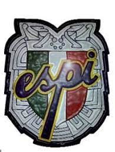

Mi vida escolar
Mi vida escolar comenzo en el jardin de niños "Rosaura Zapata" el cual es un kinder aqui en iguala la cual se ubica en la calle
zaragoza, colonia centro, ahi pase muchos momentos divertidos ya que en el jardin teniamos varias actividades en los diferentes
dias festivos como el dia del niño, dia de las madres y en tiempos de navidad, es una bonita etapa ya que conoces a tus primeros
amigos.
Despues de el jardin entre a la escuela primaria "Ruffo Figueroa", esta es una primaria que se ubica en la misma colonia donde vido y aunque
pase el primer año en la escuela revolucion mexicana, el resto de los años hasta concluir la primaria fue en esta, estos tiempos tambien fueron
muy buenos ya que la pasaba con niños que vivian en mi entorno o cerca de mi casa, aunque no fue una buena opcion ya que no conoceria a nuevos
amigos.
Una de las cosas que me gusto fue el hecho de que perteneci a la banda de guerra de la primaria y aunque no es la gran cosa, para esa edad era
algo bueno, participe mis ultimos dos años en esta banda y lo que me gusto fue que pude participar en dos desfiles pequeños, se trataba de un
desfile el cual hacia su recorrido en 3 colonias cercanas donde se juntaban a todas las primarias de las colonias aledañas unas 4-5 primarias,
fue algo que para esa edad era mut divertido.
Mi etapa en la secundaria fue el la escuela secundaria "Plan de Iguala" o tambien conocida como ESPI, esta secundaria esta en el mero centro
de la ciudad, unos tiempos muy buenos donde todo lo que mas hacia era echar relajo con mis amigos o ir a las canchas a jugar futbol, hubo muchos
momentos divertidos pero en especial uno fue en el 3er año el cual la escuela hizo un torneo de futbol entre solo los 3eros años, fue algo que
en los dos años anteriores nunca paso, esto fue mucho mas emocionante por el hecho de que fueron los partidos en horas de escuela y las gradas
estaban llenas de compañeros alumnos y compañeros de salon echando porras, al final quedamos en 2do lugar pero hey las risas no faltaron.

En la preparatoria estuve mis 3 años en el Centro de Bachillerato Tecnologico industria y de servicios #56, Gral. Ignacio Maya Herrera o mejor
conocido como "CBTis 56", como es una escuela tecnica lleve una especialidad desde el 2 semestre ya que en el primero era tronco comun y fue
hasta el 2do donde los alumnos los agruparon es su respectiva carrera, yo estuve en la especialidad de programacion donde la mayoria de mis ratos
libres me iba con mis amigos a los lavoratorios de computo a instalar nuestras laptops y nos poniamos jugar, era algo que nos gustaba y era lo mejor
que hacer ya que nosotros estabamos en el turno de la tarde y era mejor estar adentro con aire acondicionado jugando que estar afuera con temperaturas
mayores a 35°c, son momentos que la verdad no los cambiaria.